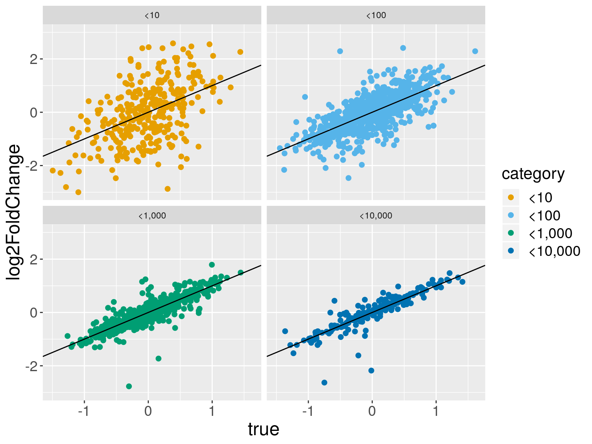
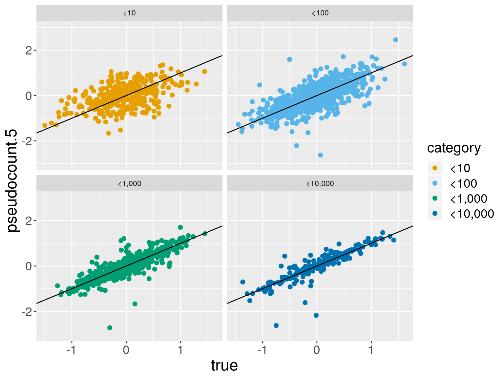
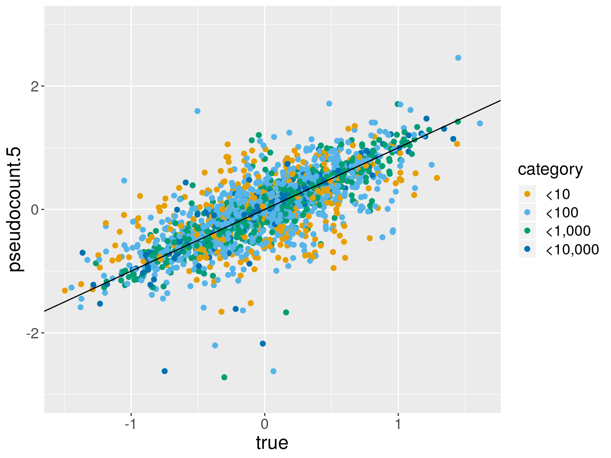
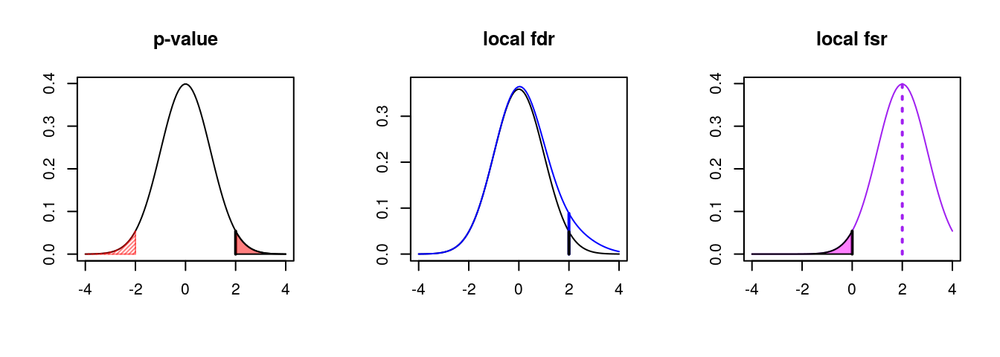

Adaptive priors for estimating effect size with genomic data
Michael Love
Dept. of Biostatistics
Dept. of Genetics
UNC-Chapel Hill
Work in collaboration with
- Anqi Zhu (UNC-CH)
- Joseph Ibrahim (UNC-CH)
Aims and activity of the Love lab
- Software and workflows for genomic data science
- Statistical method development
- Collaborations: Genetics, Biology, CS, Statistics
We often begin with plots
Crucial for high dimensional analysis:
- effect size over mean (“MA” plot)
- SD over mean
- systematic variation (boxplots, PCA)
Gene expression
- Many collaborations around gene expression:
- neurons (autism, schizophrenia) *
- adipose (T2D) *
- macrophage (arthritis) *
- colon (IBD) *
- breast tumor
- airway (HIV)
- Often, a counting technology
- Sequencing of cDNA fragments
- Nanostring
* also interested in chromatin accessibility or conformation
Log fold change
Expression of \(G\) genes, 5 replicates in 2 groups:
\[[X_{g1}, \dots, X_{g5}] \quad \textrm{vs} \quad [Y_{g1}, \dots, Y_{g5}]\]
\[ E(X_{gi}) = \mu_{gX} \]
\[ E(Y_{gi}) = \mu_{gY} \]
\[ \beta_g \equiv \log_2 \left( \frac{\mu_{gY}}{\mu_{gX}} \right) \]
Complexities
- Counts \(X_{gi}\) and \(Y_{gi}\) are actually estimated [1-3]
- Technical artifacts: per-sample scaling factor / offset [4-5]
- Batches and PCR amplification effects
- Dispersion parameter must be estimated [6-8]
- Zero component for highly amplified data [9]
References
[1] Issue of DGE (Trapnell et al., 2013)
[2] Bias models (Patro, Duggal, Love, Irizarry, & Kingsford, 2017),
[3] Isoform offset (Soneson, Love, & Robinson, 2015),
[4] TMM (M. D. Robinson & Oshlack, 2010),
[5] Median ratio (Anders & Huber, 2010),
[6] edgeR GLM (McCarthy, Chen, & Smyth, 2012),
[7] DSS (H. Wu, Wang, & Wu, 2012),
[8] DESeq2 (Love, Huber, & Anders, 2014),
[9] ZI weights (Van den Berge et al., 2018)
Effect size in simulated data
- Simulation of over-dispersed count data
- 2500 “genes”, 5 vs 5 replicates
Effect size over mean (“MA”)
Estimate over truth

Faceted by mean

Pseudocount 1
Pseudocount 5

Normal prior
Pseudocount 5

Normal prior

What do we see
With prior:
- Reduced variance
- Genes can be ranked
- Moderate bias
Effect size estimation
- Perhaps we can do better than pseudocount
- Why bother? Just use p-values
A distribution of effect sizes
- Highly replicated yeast dataset (Schurch et al., 2016)
- 42 vs 44 biological replicates!
- \(\Delta snf2\) mutant
- Catalytic component of the SWI/SNF complex
- Chromatin-remodeling
- Regulation of a large number of genes
LFC in highly replicated yeast
LFC with 2x SE
(1700 black, 5100 red)
Consider utility of p-values
- Null likely false for (nearly) all genes in this example
- Ranking by prob under the null seems non-obvious
- We can estimate the effect size for small or large n
Normal prior in DESeq2
- MLE coefficients, \(\hat{\beta}_g\)
- Adapt prior to these
- Normal has thin tails
- Match Normal to upper 5% weighted quantile
- Inverse weight by expected variance of log counts
(Love et al., 2014)
Other priors with heavy tails
- ashr (Stephens, 2016)
- \(\pi_0 \delta_0 + \sum_{k=1}^K \pi_k N(\cdot; 0, \sigma_k^2)\)
- \(\sigma_1, \dots, \sigma_k\) a large, dense, fixed grid
- apeglm (Zhu, Ibrahim, & Love, 2018)
- Cauchy prior with scale parameter \(S\)
Method details
- ashr:
- set \(\sigma_k\) grid based on min \(\hat{s}_g\) and max \(\hat{\beta}_g^2 - \hat{s}_g^2\)
- estimate \(\pi_k\) using \(\hat{\beta}_g\) and \(\hat{s}_g\)
- \(P(\hat{\beta}_g | \beta_g, \hat{s}_g) = N(\hat{\beta}_g; \beta_g, \hat{s}_g^2)\)
- return the posterior mean, SD
- apeglm:
- set the scale \(S\) of Cauchy using \(\hat{\beta}_g\) and \(\hat{s}_g\)
- use data \(Y_g\), parameters \(\theta_g\), likelihood (NB, ZINB, etc.)
- return the posterior mode, SD
Connection to bayesglm
- Uses a 2.5 scale Cauchy prior on non-constant coefficients
- Posterior mode and SE via an approximate EM within IRLS
(Gelman, Jakulin, Pittau, & Su, 2008)
Connection to bayesglm
- “want something better than the unstable estimates produced by the current default - maximum likelihood”
- “[Cauchy] allows for occasional large coefficients while still performing a reasonable amount of shrinkage for coefficients near zero”
(Gelman et al., 2008)
Connection to bayesglm
Cauchy can be modeled as a mixture of Normals:
\[ \beta \sim N(0, \sigma^2) \]
\[ \sigma^2 \sim \textrm{Scale-inv-} \chi^2(\nu, S^2) \]
- \(\nu=1\) and \(S=2.5\) are fixed
- Within IRLS, perform an EM step
- Treat \(\beta\) as missing data, estimate \(\sigma\)
(Gelman et al., 2008)
apeglm implementation
Approximate Posterior Estimation for GLM
- Prior fit to \(\hat{\beta}_g\) and \(\hat{s}_g\), details on next slide
- Treat dispersion parameter as fixed
- C++ version of L-BFGS-B to obtain posterior mode [1]
optimto obtain Hessian for Laplace approximation [2]- [1] takes < 1 s, [2] takes ~3 s, over e.g. 10k genes
Solve for \(A\) in equation of the form (Efron & Morris, 1975)
\(A = f(A, \hat{\beta}_g^2, e_g^2)\)
Motivated by the following hierarchical model:
\[ \hat{\beta}_g \sim N(\beta_g, e_g^2) \]
\[ \beta_g \sim N(0, A) \]
Two approximations to note:
- We plug in \(\hat{s}_g^2\) for \(e_g^2\)
- Estimate scale of a Normal then use a Cauchy
False Sign Rate (FSR)
- p-value*
- adjusted p-value
- q-value
- local false discovery rate
- local false sign rate*
- s-value

Prior scale & False Sign Rate (FSR)

Prior scale & estimation error

Prior scale & estimation error

Return to yeast example
3 vs 3 replicates
Yeast with Normal prior
Yeast with apeglm
Yeast with ashr
Error and concordance for various methods
Yeast: n=3 and n=5
Simulation: n=5 and n=10
Simulation: n=30 and n=50

What else are we doing
- tximeta - automatic detection of gene provenance (slides)
- rnaseqDTU - workflow for differential transcript usage
- Propagation of uncertainty at transcript-level
- Multi-omics unsupervised benchmark (McCabe)
- Germline analysis in Carolina Breast Cancer Study (Bhattacharya)
Simplify statistical routines
# import the data
se <- tximeta(samples)
gse <- summarizeToGene(se)
# build dataset
dds <- DESeqDataSet(gse, ~batch + condition)
# variance stabilization
vsd <- vst(dds)
# size factors, dispersion estimation
dds <- DESeq(dds)
# shrinkage estimation
res <- lfcShrink(dds, coef=3)Paper and software
- apeglm preprint on bioRxiv (accepted at Bioinformatics)
lfcShrink(dds, coef=2, type="apeglm")lfcShrink(dds, coef=2, type="ashr")
Acknowledgments
- Work by Anqi Zhu and Joseph Ibrahim
- Comments from Wolfgang Huber and Cecile Le Sueur
- Funding:
- MIL - R01 HG009125, P01 CA142538, P30 ES010126
- JGI and AZ - R01 GM070335 and P01 CA142538
Previous work on LFC shrinkage in RNA-seq
- ShrinkBayes (Mark A. van de Wiel et al., 2012; Mark A van de Wiel, Neerincx, Buffart, Sie, & Verheul, 2014)
- shrinkage of many parameters simultaneously
- non-equal mixture proportions for + and - effects
- spike + parametric, spike + non-parametric
- Integrated Nested Laplace Approximation
INLA
Connection to dispersion prior
- DSS - model log dispersion as Normal. Method of moments estimator and simulation to define hyper-parameters
- DESeq2 - model log dispersion as Normal. Cox-Reid estimator and closed form to define hyper-parameters
- BASiCS - model log dispersion with Student’s t
\[ \log(\delta_g) \sim f(\mu_g) + \varepsilon, \quad \varepsilon \sim t_\nu(0,\sigma^2) \]
“here we opt for a Student-t distribution as it leads to inference that is more robust to the presence of outlier genes”
Problem case for apeglm

Anders, S., & Huber, W. (2010). Differential expression analysis for sequence count data. Genome Biology, 11, R106. https://doi.org/10.1186/gb-2010-11-10-r106
Efron, B., & Morris, C. (1975). Data Analysis Using Stein’s Estimator and Its Generalization. Journal of the American Statistical Association, 70(350), 311–319.
Gelman, A., Jakulin, A., Pittau, M. G., & Su, Y.-S. (2008). A weakly informative default prior distribution for logistic and other regression models. The Annals of Applied Statistics, 1360–1383. http://www.stat.columbia.edu/~gelman/research/published/priors11.pdf
Love, M. I., Huber, W., & Anders, S. (2014). Moderated estimation of fold change and dispersion for RNA-seq data with DESeq2. Genome Biology, 15(12), 550. https://doi.org/10.1186/s13059-014-0550-8
McCarthy, D. J., Chen, Y., & Smyth, G. K. (2012). Differential expression analysis of multifactor RNA-Seq experiments with respect to biological variation. Nucleic Acids Research, 40, 4288–4297. https://doi.org/10.1093/nar/gks042
Patro, R., Duggal, G., Love, M. I., Irizarry, R. A., & Kingsford, C. (2017). Salmon provides fast and bias-aware quantification of transcript expression. Nature Methods. http://dx.doi.org/10.1038/nmeth.4197
Robinson, M. D., & Oshlack, A. (2010). A scaling normalization method for differential expression analysis of RNA-seq data. Genome Biology, 11(r25). https://doi.org/10.1186/gb-2010-11-3-r25
Schurch, N. J., Schofield, P., Gierliński, M., Cole, C., Sherstnev, A., Singh, V., … Barton, G. J. (2016). How many biological replicates are needed in an RNA-seq experiment and which differential expression tool should you use? RNA, 22(6), 839–851. https://doi.org/10.1261/rna.053959.115
Soneson, C., Love, M. I., & Robinson, M. (2015). Differential analyses for RNA-seq: transcript-level estimates improve gene-level inferences. F1000Research, 4(1521). https://doi.org/10.12688/f1000research.7563.1
Stephens, M. (2016). False discovery rates: A new deal. Biostatistics, 18(2). https://doi.org/10.1093/biostatistics/kxw041
Trapnell, C., Hendrickson, D. G., Sauvageau, M., Goff, L., Rinn, J. L., & Pachter, L. (2013). Differential analysis of gene regulation at transcript resolution with RNA-seq. Nature Biotechnology. http://dx.doi.org/10.1038/nbt.2450
Van den Berge, K., Perraudeau, F., Soneson, C., Love, M. I., Risso, D., Vert, J.-P., … Clement, L. (2018). Observation weights unlock bulk RNA-seq tools for zero inflation and single-cell applications. Genome Biology, 19(24). https://doi.org/10.1186/s13059-018-1406-4
Wiel, M. A. van de, Leday, G. G., Pardo, L., Rue, H., Vaart, A. W. van der, & Wieringen, W. N. van. (2012). Bayesian analysis of RNA sequencing data by estimating multiple shrinkage priors. Biostatistics, 14(1), 113–128. https://doi.org/10.1093/biostatistics/kxs031
Wiel, M. A. van de, Neerincx, M., Buffart, T. E., Sie, D., & Verheul, H. M. (2014). ShrinkBayes: a versatile R-package for analysis of count-based sequencing data in complex study designs. BMC Bioinformatics, 15(116). https://doi.org/10.1186/1471-2105-15-116
Wu, H., Wang, C., & Wu, Z. (2012). A new shrinkage estimator for dispersion improves differential expression detection in RNA-seq data. Biostatistics, 14(2). https://doi.org/10.1093/biostatistics/kxs033
Zhu, A., Ibrahim, J. G., & Love, M. I. (2018). Heavy-tailed prior distributions for sequence count data: Removing the noise and preserving large differences. bioRxiv. https://doi.org/10.1101/303255